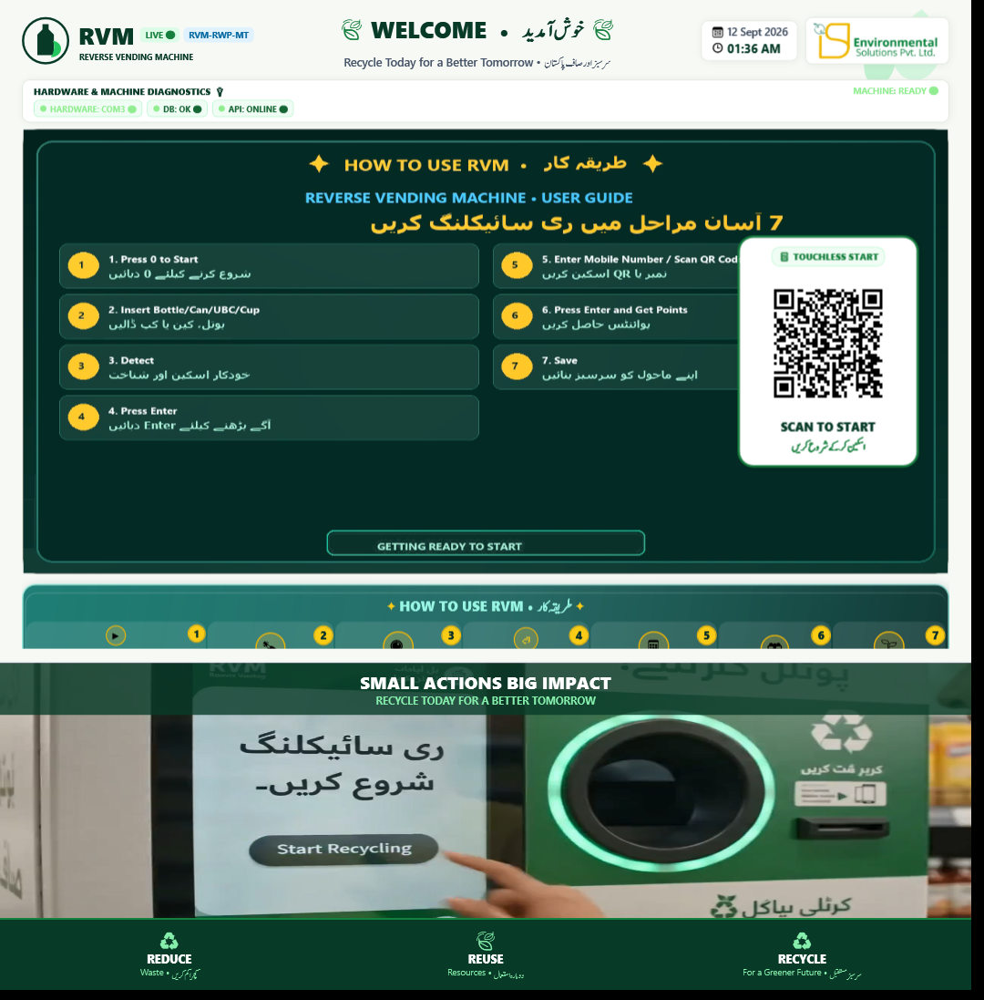
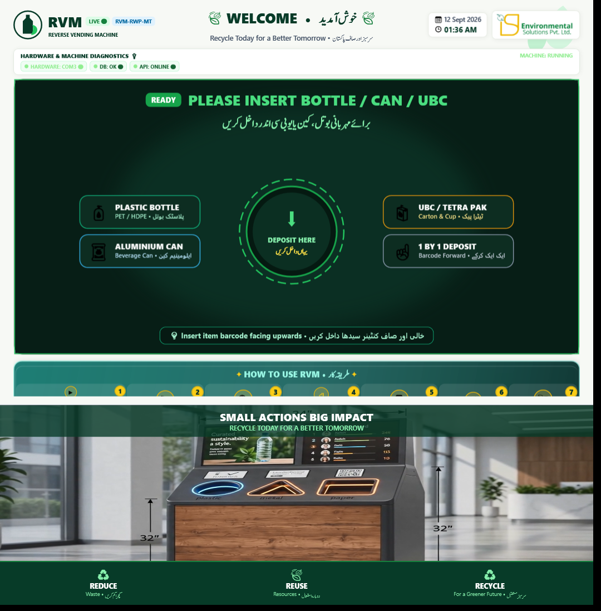
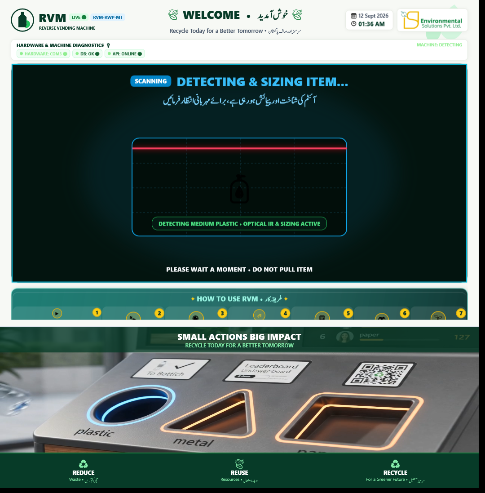
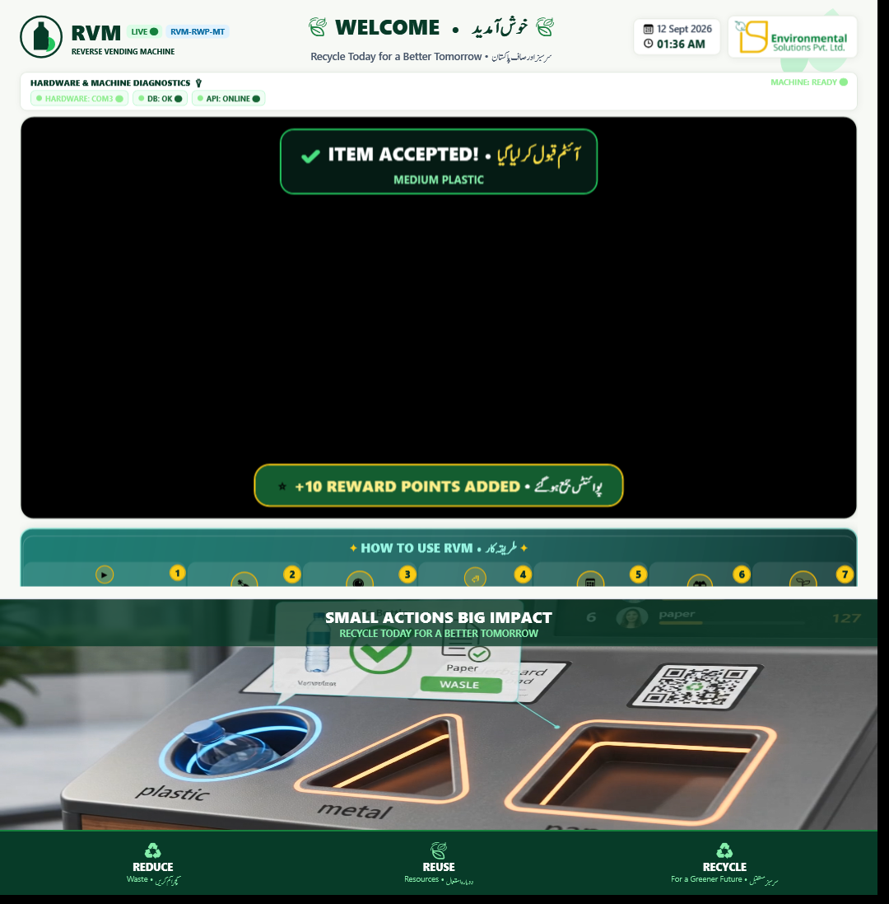
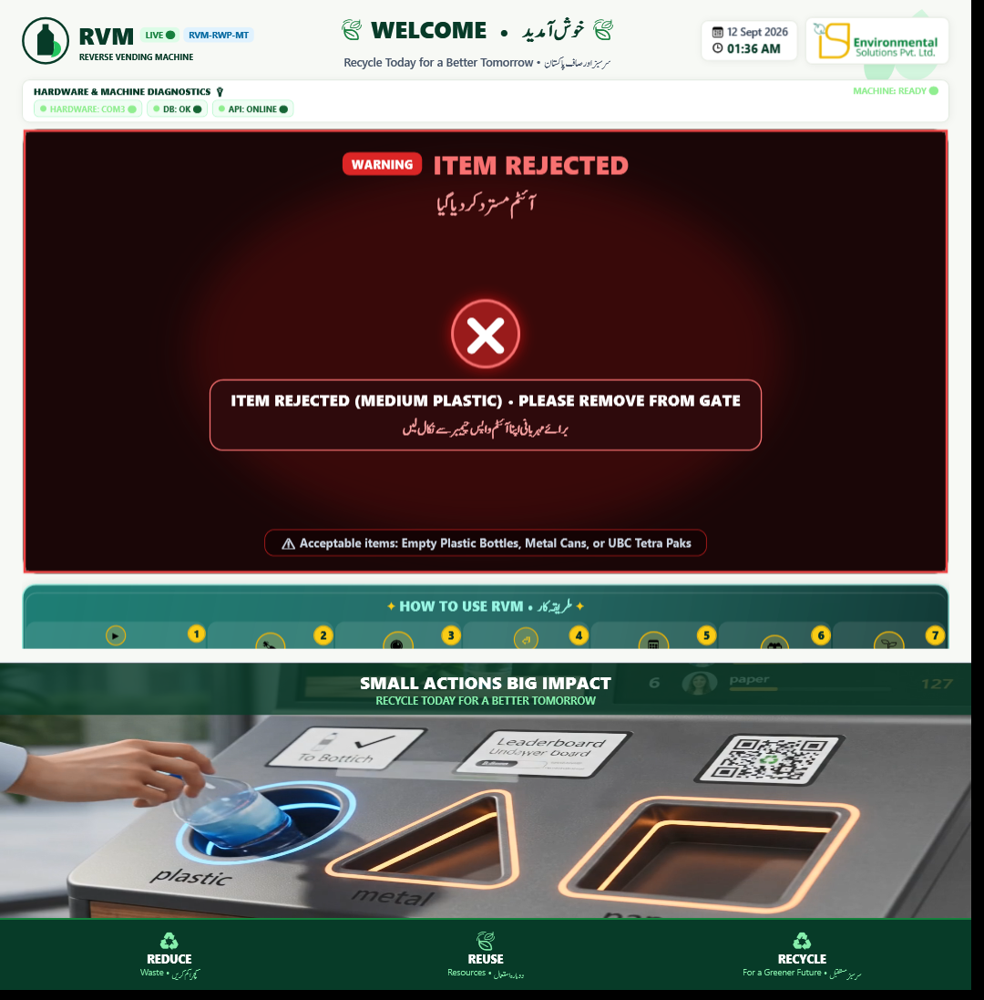
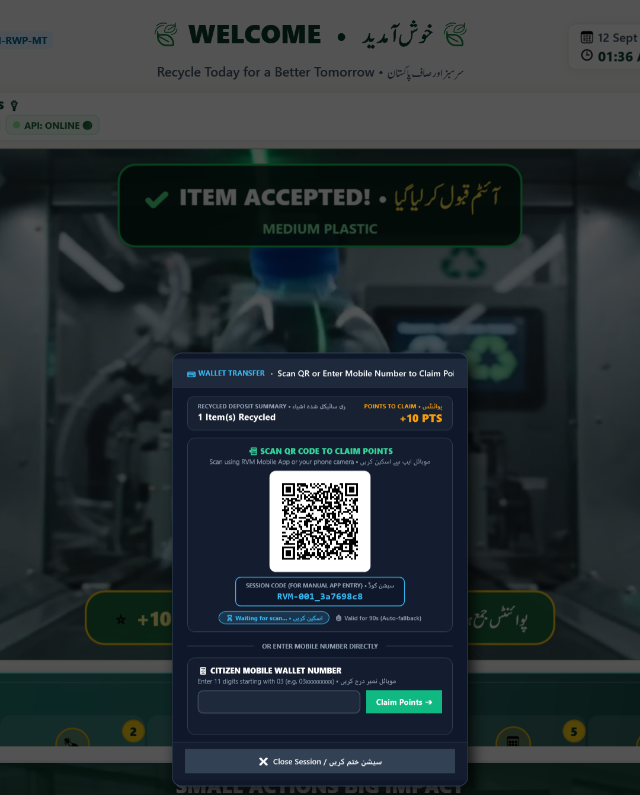
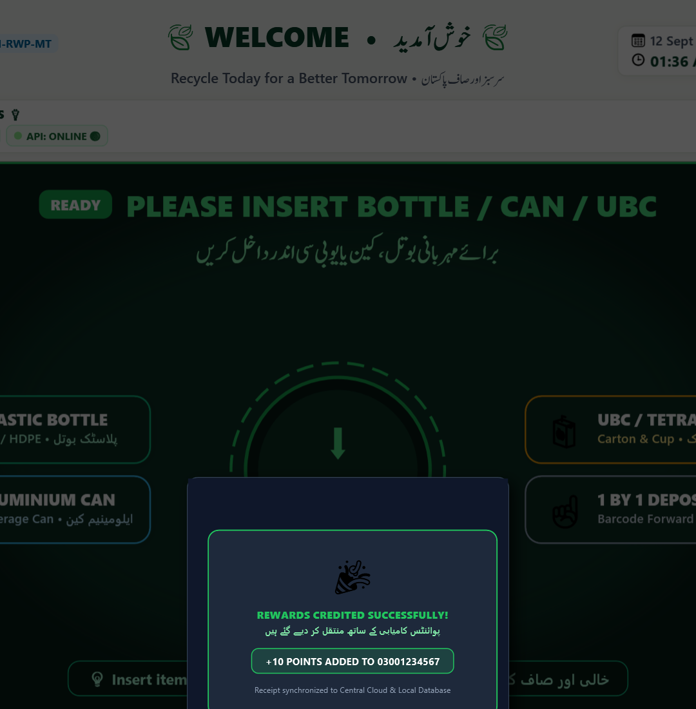
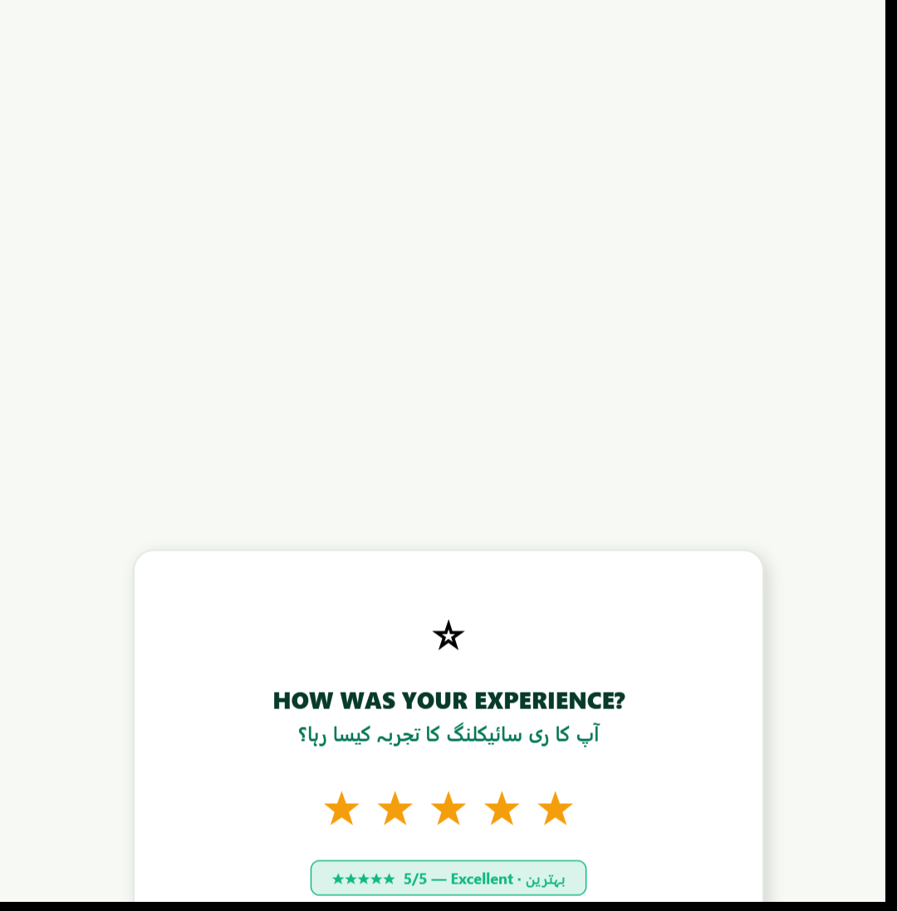
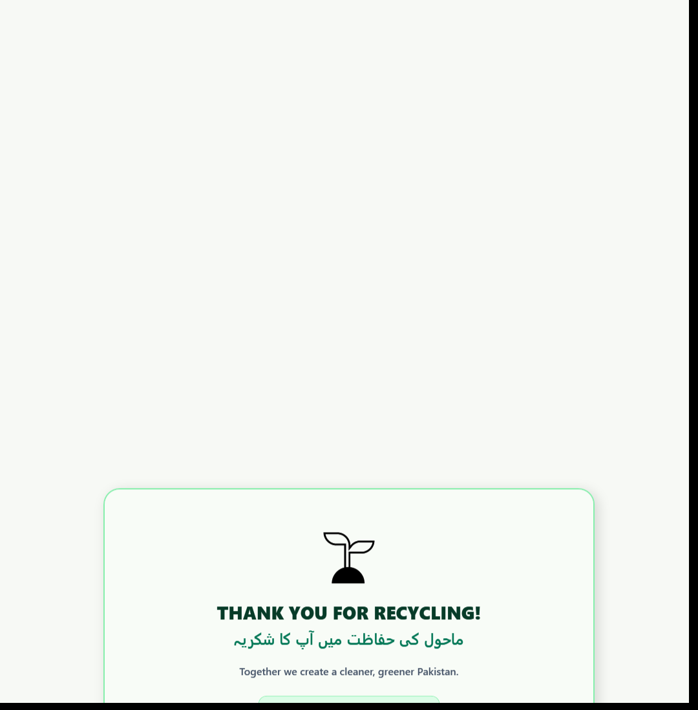
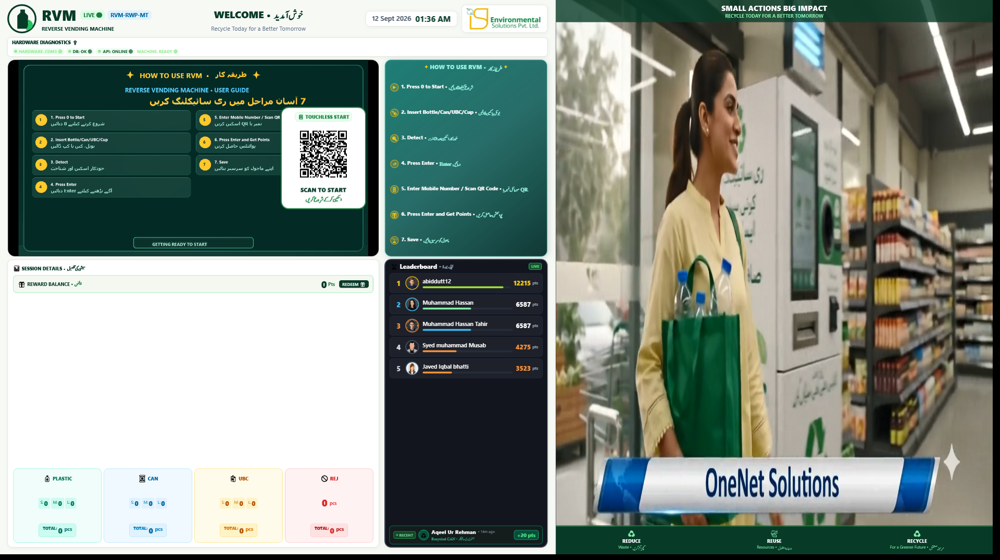

ISP Environmental Solutions Pvt. Ltd.
Manufacturer • Public Smart Recycling Systems
RVM Public Reverse Vending Machine
Complete User & Operator Guide (A to Z)
Smart RVM for shopping malls, metro stations, commercial hubs and parks: how citizens recycle and claim rewards, and how site operators and technicians run, configure and maintain the machine.
Product: ISP Smart Reverse Vending Machine, public edition (application RVMDesktopApp, Windows / .NET 8)
Central system: ISP Master Portal – https://isprvm.binishaqsoft.com
Companion mobile app: Trash to Cash (Android)
Who should read what
Part A – Citizens: sections 1 to 11 (safe to print and display next to the machine).
Part B – Site operators and ISP technicians: sections 12 to 23 (contains confidential key sequences; do not display in public).
Edition: 17 October 2026 • Prepared from the current application source code and firmware.
Part A – Using the RVM
For members of the public.
1. What the RVM is
The RVM (Reverse Vending Machine) takes back empty beverage containers and rewards you with points. Insert one container at a time; the machine identifies the material and size, drops it into the collection bin and adds points to your session. At the end you send the points to your mobile wallet account, where they can be turned into rewards through the Trash to Cash app and ISP's reward programme.
🧴 PLASTIC
PET / HDPE bottles
Small • Medium • Large
🥫 CAN
Aluminium beverage cans
Small • Medium • Large
🧃 UBC
Tetra Pak / carton drinks
Small • Medium • Large
🚫 REJECT
Anything the sensors cannot validate is returned and counted as rejected
Never insert: hands or objects other than empty containers, glass, liquids, batteries, aerosols, food, paper or general waste. Containers must be empty; a bottle with liquid is rejected or may jam the chamber.
2. Know the kiosk
- Touch screen (portrait) with, from top to bottom: the header "RVM • REVERSE VENDING MACHINE – WELCOME • خوش آمدید" with the LIVE badge and machine ID; the HARDWARE & MACHINE DIAGNOSTICS strip; the instruction video / "HOW TO USE RVM" seven-step guide with the TOUCHLESS START QR card; the "HOW TO USE RVM" step strip; and, lower down, the SESSION DETAILS panel with YOUR REWARD BALANCE and the PLASTIC / CAN / UBC / REJ cards (S, M, L and TOTAL counts), the advertisement video and the Top 10 leaderboard.
- Insertion aperture – a single round, illuminated opening. Insert the container lengthwise, barcode facing upwards, and let go.
- Keypad – a numeric keypad next to the screen. You only need 0 (start), Enter (finish), the digits for your mobile number or rating, Backspace to correct a digit, and * to cancel a dialog.
- Collection bin inside the cabinet (serviced by staff).

Figure 1 – Welcome screen: diagnostics strip (HARDWARE: COM3, DB: OK, API: ONLINE, MACHINE: READY), the seven-step guide and the "SCAN TO START" touchless QR.
3. Before you start
- The header shows LIVE and the diagnostics strip shows HARDWARE (green), DB: OK and API: ONLINE; the status reads MACHINE: READY.
- Your container is empty and not flattened; the barcode is readable.
- You have the Trash to Cash app installed and signed in, or you know the 11-digit mobile number (03xxxxxxxxx) registered to your wallet account.
4. Starting a session
| Method | What to do | Result |
|---|
| A. Touchless QR (recommended) | In the Trash to Cash app open the QR scanner and scan the SCAN TO START code on screen (or scan it with the phone camera and open the link). The code renews itself about every 110 seconds, so scan the one currently displayed. | The kiosk greets you ("👤 <your name> Balance: N pts") and starts the machine. Your points will be credited automatically when you finish. |
| B. Press 0 or touch the start circle | Press 0 on the keypad or touch the glowing start circle on screen. | An anonymous session starts; you will claim the points at the end with the app or your mobile number. |
The screen then shows "Machine Started – Insert container", the status becomes MACHINE: RUNNING and the overlay "PLEASE INSERT BOTTLE / CAN / UBC" appears.

Figure 2 – Session started: the kiosk is waiting for the first container.
5. Inserting items (one at a time)
- Insert one empty container into the aperture, barcode facing up, and release it completely. Do not hold it.
- The screen shows "Scanning... / Bottle detected" and the overlay "DETECTING & SIZING ITEM... – CALIBRATING VOLUME • OPTICAL IR SCAN ACTIVE – PLEASE WAIT A MOMENT • DO NOT PULL ITEM". Do not insert another item during scanning.
- If the item is accepted the gate opens, the container drops and the screen shows "ITEM ACCEPTED! • <SIZE MATERIAL> – +N REWARD POINTS ADDED" with a short celebration animation. The matching card (PLASTIC, CAN or UBC) and YOUR REWARD BALANCE increase.
- After about 5 seconds the "insert" prompt returns. Insert the next container.

Figure 3 – Detecting and sizing.

Figure 4 – Accepted: "+10 REWARD POINTS ADDED".
Size classes used on the dashboard: bottles Small ≈ 345 ml, Medium 500 ml–1 L, Large 1.5 L; cans Small 250 ml, Medium 375 ml, Large 500 ml; cartons Small 200 ml, Medium 1 L, Large 1.5 L. The machine measures the container's length with infrared sensors to decide the class.
Timing. If no container is dropped within 25 seconds of the scan starting, the kiosk shows "Scan Timeout – Remove bottle and try again" and resets. After each accepted item you have 15 seconds to insert the next one; from 10 seconds the screen counts down "Insert item • Auto-completing in Ns" and then finishes the session for you.
6. Rejected items and messages

Figure 5 – Rejected item: "ITEM REJECTED – PLEASE REMOVE ITEM FROM DEPOSIT CHAMBER".
| Message on screen | Meaning and what to do |
|---|
| Rejected / Invalid item – ITEM REJECTED, PLEASE REMOVE ITEM FROM DEPOSIT CHAMBER | The material or size could not be validated (for example a non-metal, non-carton object, or an unrecognised shape). Take the item back from the aperture when the gate presents it, wait for all movement to stop, and try a different container. The REJ counter increases; no points are given. |
| Scan Timeout – Remove bottle and try again | The container was not released or did not reach the sensors within 25 seconds. Remove it and insert it again, barcode up. |
| Bottle stuck – Remove the bottle before inserting another item – MACHINE: BLOCKED | The container did not clear the drop gate. Pull it back gently if it is in the aperture; otherwise call staff. The points for that item are cancelled; the machine shows "Ready / Insert the next item" once the chamber is clear. |
| Bin Full / Blocked – MACHINE: BIN FULL | The collection bin is full. The machine stops accepting items until staff empty it. |
| HARDWARE CONNECTION ERROR / HARDWARE: ERROR | The screen has lost contact with the machine. Do not insert anything; inform staff. |
| Calibrating... / Keep pipe empty | The machine is zeroing its sensors; wait for MACHINE: READY. |
7. Finishing the session
Press Enter (or wait for the 15-second auto-complete). If you press Enter before inserting anything the kiosk says "Start recycling first" or "No items to credit – Insert an item before using your wallet". If the machine is completely offline it says "Wallet unavailable – Connect local DB or Central Network before crediting a wallet"; ask staff.
8. Claiming your points
8.1 You started with the touchless QR
Your account is already known, so the points are credited immediately. The ⭐ EXPERIENCE RATING window appears ("HOW WAS YOUR EXPERIENCE?"): press 1 (Very Bad) to 5 (Excellent) and Enter, or wait 8 seconds. Then "THANK YOU FOR RECYCLING! – Your wallet has been credited and feedback recorded." is shown and the kiosk returns to the welcome screen.
8.2 You started with key 0 or the start circle
The 💳 WALLET TRANSFER · Scan QR or Enter Mobile Number to Claim Points window opens with your RECYCLED DEPOSIT SUMMARY and POINTS TO CLAIM. Choose one option:
- 📲 SCAN QR CODE TO CLAIM POINTS – scan the code with the Trash to Cash app or your phone camera, or type the SESSION CODE (FOR MANUAL APP ENTRY) (for example RVM-001_3a7698c8) into the app. The window shows "⏳ Waiting for scan..." then "✓ Claimed by <name>!". The code is valid for 90 seconds; if it expires the window shows "⏱️ Expired - closing session..." and the session closes without crediting anyone.
- OR ENTER MOBILE NUMBER DIRECTLY – type your 11-digit number starting with 03 in "📱 CITIZEN MOBILE WALLET NUMBER" and press Claim Points ➔ or Enter. The field validates as you type ("Must start with 03", "Must be exactly 11 digits", "✓ Valid mobile number"). If the number has no account yet, the points are kept under that number until you register in the app with the same number.

Figure 6 – Wallet transfer: claim QR, session code and mobile-number entry.

Figure 7 – Points credited.
After the claim you are asked for the 1–5 star rating, then the thank-you message is shown and the session ends. ✖ Close Session, Esc or * closes the window without claiming.

Figure 8 – Experience rating.

Figure 9 – Session complete; kiosk returns to welcome.
9. Points, rewards and payouts
- Points per item are set centrally by ISP and pushed to each machine. Factory defaults when no rule is configured: plastic bottles Small / Medium / Large = 5 / 10 / 15 points, cans = 10 / 15 / 20 points, cartons (UBC) = 5 / 10 / 15 points. The points shown at acceptance time are the ones that apply.
- Value. On the ISP programme 5 points = PKR 1 (1,000 points ≈ PKR 200 voucher value).
- Where to see and spend points. In the Trash to Cash app: balance, session history, leaderboard and the rewards catalogue (mobile airtime, shopping vouchers, cafeteria vouchers, tree-planting certificates). Cash payouts to EasyPaisa or JazzCash wallets, mobile load, Raast transfers and merchant e-vouchers are issued by ISP administrators from the Master Portal against your balance; the kiosk itself does not pay out.
- Leaderboard. The kiosk shows the top 10 wallets by points balance held on that machine; the app shows the national leaderboard.
- Impact. Each item is counted as about 0.15 kg of CO₂ and 0.75 L of water saved in the on-kiosk session summary.
10. Do's and don'ts
Do- Start the session first, then insert.
- One container at a time, empty, barcode up.
- Wait for "ITEM ACCEPTED!" before the next one.
- Finish with Enter and claim within 90 seconds.
- Report jams, errors or a full bin to staff.
Don't- Hold the container or pull it back during scanning.
- Force items, reach inside or hit the gate.
- Insert glass, liquids, batteries, aerosols or waste.
- Share your claim QR or session code with others.
- Walk away before claiming (anonymous sessions expire unclaimed).
11. Frequently asked questions
- The screen zoomed into the video and the counters disappeared. After one minute without activity the kiosk enlarges the instruction video. Touch the screen or press 0 to restore the normal layout.
- I entered my number but have no app. Download Trash to Cash, register with the same mobile number and the points will be in your balance.
- I pressed Enter by mistake with no items. Nothing is lost: the kiosk shows "No items to credit" and returns to the session.
- The QR window closed before I could scan. The claim QR is valid for 90 seconds and the session closes unclaimed afterwards. Ask the operator to check the machine's transaction log; points cannot be re-issued by the kiosk itself.
- Can I recycle paper here? No. Paper is accepted only on the PecoDrop corporate kiosks.
Part B – Operating and maintaining the RVM
For site operators, mall / station facility staff and ISP technicians. Contains confidential key sequences.
Confidential. Sections 14, 15, 20 and 23 describe key sequences that stop the machine, open service controls or power off the kiosk computer. Do not post Part B in public.
12. Daily opening and closing checklist
Opening
- Power on; the application launches full-screen automatically (otherwise use the launch command in section 17).
- Wait for the start-up calibration ("Calibrating... / Keep pipe empty") to end with "Ready / Empty pipe distance: n cm" and HARDWARE: COMx green.
- Diagnostics strip shows DB: OK and API: ONLINE; header badge LIVE. "UNAUTHORIZED" means the machine ID is not registered on the Master Portal (section 21).
- Collection bin empty and seated; the bin-full sensor beam (D11) is clear.
- Aperture, gate area, screen and keypad clean; nothing left in the chamber.
- Machine ID and location in the header are correct.
- One test deposit where site policy allows; confirm it appears in the portal's Machine Health tab.
Closing
- Let any session finish (or press S to stop it).
- Empty the bin if the kiosk showed BIN FULL; check the chamber for stuck items.
- Follow the site's always-on or shutdown policy (section 23).
13. Reading the status indicators
| Indicator | Values and meaning |
|---|
| Header badge | LIVE portal reachable • UNAUTHORIZED machine not registered / kiosk key rejected • OFFLINE no network (deposits continue locally). |
| HARDWARE / SERIAL | COMx connected and calibrated • ERROR serial fault or cable removed (red banner with RETRY). |
| DB | OK local SQL Server Express reachable. Without local DB and without the portal, wallet credit is refused. |
| API | ONLINE Master Portal reachable • offline tolerated; data syncs later. |
| MACHINE | READY • RUNNING • BIN FULL • BLOCKED (stuck item) • NOT CALIBRATED • ERROR. |
| DEMO MODE / DEMO TESTING (F2) | Simulated hardware. Never leave a public kiosk in demo mode; restart the application to clear it. |
14. Keypad reference
Sequences are typed on the keypad; the buffer resets after 4 seconds between digits.
14.1 Public keys
| Key | Function |
|---|
| 0 / start circle | Start a session (hardware must be connected; otherwise the telemetry log says "Key 0 is reserved for physical hardware"). Also restores the screen from idle zoom and retries a lost hardware connection. |
| Enter | Finish the session and open the wallet / rating window. |
| Digits | Mobile number or rating entry. |
| Backspace / numpad - | Delete the last digit. |
| * / Esc | Cancel / close the current dialog. |
| / | Toggle keypad mouse-emulation (8 / 2 / 4 / 6 move, 5 or Enter click, 0 / . right-click). |
14.2 Confidential operator sequences
| Sequence | Function |
|---|
| 111 or A | Open the Administration login. |
| 888 | Toggle the real-time telemetry overlay (last 200 log lines). Esc or * closes it. |
| 33 (3 twice within 1.5 s) | CLEAR_CHAMBER: opens the drop gate for 2 seconds to release a stuck item. |
| 001 | Start a demo session without the simulator window. 1122, F2: demo mode with the Demo Testing simulator window. |
| 1218 / 1219 | Confidential RESTART / SHUTDOWN dialog for the kiosk computer (section 23). |
| S | Stop the machine (keyboard). |
| B / C / U / R | Simulate plastic / can / UBC / reject – demo mode only; ignored in normal operation. |
| Ctrl+I | Toggle the idle-zoom layout (testing). |
The sequences 55, 66, 77, 88, 99, 0012, 0021 and 601–629 belong to the PecoDrop enterprise kiosk and do nothing on the RVM.
15. Administration panel
Open with 111 or A ("RVM Admin Panel Login"). The account is stored in the kiosk's local SQL Server (table AdminCredentials); change the factory password during commissioning from the Security tab. If the local database is unreachable, the login falls back only to AdminUsername / AdminPassword in config.txt (empty = refused).
| Tab | Contents |
|---|
| Point Settings | Local point grid; Save Points writes dbo.PointSettings. Portal rules override local values on the next sync. |
| Transactions Log | Last 100 local transactions (dbo.BottleTransactions) with sync state. |
| 🔐 Security & Manual Data Sync | Local vs dashboard comparison • ⚡ Sync Local Unsynced Data to Dashboard • Update Admin Password • Pull Latest Point Settings from Dashboard. |
| ⚙️ System & Hardware Config (config.txt) | Machine ID, Kiosk UI Theme (Modern / Classic), Central Dashboard Base URL, Location, Latitude / Longitude with 📍 Auto-Detect, SQL Connection String, Arduino port / baud, Camera port / baud, hardware buttons (Refresh All, Safe Self-Test, Calibrate, Safe Stop, Entrance Open / Close, Drop Open / Close, Reconnect / Re-initialize), video folders, model path, capture directory. Save Configuration writes config.txt, applies the theme and restarts the heartbeat. |
| ⚡ Central Dashboard Simulator | Ping, Simulate Insert, Send Heartbeat, Verify QR – commissioning tests only (records are real on the portal). |
| 📺 Advertisement & Video Signage | Browse / Add, Open Ads Folder, Refresh, Apply & Play, Preview, Delete. |
Hardware buttons use the kiosk's live serial link and are disabled when "Arduino is offline or Demo Mode is active". Closing the Admin window sends DIAG:EXIT so the firmware returns to normal operation.
16. config.txt reference
| Key | Default | Meaning |
|---|
| MachineId | RVM-001 | Unique ID, must match the machine registered on the Master Portal. Aliases MachineName / RVMName are accepted. |
| CentralApiUrl | https://isprvm.binishaqsoft.com | Master Portal base URL. |
| KioskApiKey | (empty) | Shared secret issued by ISP, sent as the x-kiosk-key header. Required once the portal enforces kiosk authentication. Never shown in the UI. |
| ConnectionString | Server=.\SQLEXPRESS;Database=RVMDB;User ID=RVM;… | Local SQL Server. Change the SQL password from the factory value. |
| Location / Latitude / Longitude | Lahore example / 31.5826 / 74.3276 | Shown in the header and reported in the heartbeat for the fleet map. |
| ArduinoPort / ArduinoBaud | COM16 / 9600 | Serial port and speed of the machine controller. |
| CameraPort / CameraBaud | COM31 / 921600 | Optional camera module (not used by the standard session flow). |
| AdvertisementVideoFolder / InstructionVideoFolder | Ads\Advertisements / Ads\Instructions | Advertisement playlist and instruction video (first file in the folder). |
| ModelPath / CaptureDirectory | Models\… / Captures | Optional classifier model and capture folder. |
| UiTheme | Modern | Modern or Classic interface skin. |
| AdminUsername / AdminPassword | (empty) | Offline fallback for the Admin login. |
config.txt lives next to the executable. Saving from the Admin panel preserves KioskApiKey, AdminUsername and AdminPassword.
17. Launching the application and screen modes
- Launch command: powershell -ExecutionPolicy Bypass -File .\RVMDesktopApp\launch-kiosk.ps1. Parameters: -ScreenIndex (default 1), -Mode Portrait|Landscape|Auto (default Portrait; Auto detects from the monitor orientation), -Demo.
- The application runs one window per process: a 1080×1920 portrait touch layout (standard) or a 1920×1080 landscape layout (--landscape, 56 % / 44 % two-column layout). Only one instance can run at a time.
- Idle zoom: after 1 minute without activity (machine not running) the instruction video expands to half the screen; any key, touch or mouse movement restores the layout.

Figure 10 – Landscape layout (left: guide and session panel, right: live leaderboard).
18. Advertisements and instruction video
- The instruction video is the first file in Ads\Instructions; it is managed locally (copy a new MP4 into the folder).
- Advertisement videos play in the lower banner. Every 15 seconds the kiosk downloads the active campaign and playlist assigned to it on the Master Portal (Digital Signage tab) into Ads\Advertisements; downloaded files no longer in the playlist are removed. Instruction and celebration videos are never deleted.
- Local additions: Admin → Advertisement & Video Signage → Browse / Add → Apply & Play.
19. Point rules, leaderboard and data sync
- Point rules. Precedence: Master Portal machine config (GET /api/machine/config/<MachineId> every 15 s) → local dbo.PointSettings → built-in defaults (plastic 5 / 10 / 15, can 10 / 15 / 20, carton 5 / 10 / 15). Note: in the current build cartons (UBC / Tetra Pak) are credited with the paper-per-kg value (15) for every size when no explicit carton rule exists; configure explicit TETRA PAK rules on the portal.
- Heartbeat. POST /api/machine/heartbeat every 15 s with machine ID, status, location and coordinates. A 403 reply shows "Machine '<id>' not registered/authorized on Central Dashboard"; a super admin must register the machine in the portal. This model does not report a measured bin-fill percentage; rely on the kiosk's BIN FULL status.
- Sessions. Each accepted item is posted live to /api/machine/sync-session with the cumulative session counts; the final post carries the claiming mobile number. Ratings go to /api/machine/feedback.
- Offline. Transactions are stored in dbo.BottleTransactions with IsSynced = 0 and uploaded automatically when the portal is back (15 s cycle) or manually from the Security tab.
- Leaderboard. Top 10 of the local dbo.WalletAccounts by points balance.
20. Hardware and firmware (Arduino)
20.1 Controller and sensors
- Firmware: RVMDesktopApp\Arduino\RVM_Arduino\RVM_Arduino.ino, serial 9600 baud, 8-N-1.
- Pins: bottom IR D2, chamber ultrasonic echo D3 / trigger D4, metal inductive D5, entrance gate servo D6 (75° closed / 90° open), middle IR D7, top IR D8, drop gate servo D9 (71° closed / open), Tetra inductive D10, bin-full sensor D11, entrance ultrasonic D12 / D13.
- Sizing: top IR covered = LARGE, middle = MEDIUM, otherwise SMALL. Material: 20 samples over 200 ms; metal + tetra = TETRAPAK, metal only = CAN, tetra only = REJECT, non-metal short object (4–14 cm) = CUP, otherwise PLASTIC.
- The entrance gate opens when an object is within 15 cm of the entrance sensor while the machine is running and closes 5 s after the entrance clears; it stays closed when stopped.
20.2 Start-up and calibration
On connection the application toggles DTR / RTS (which resets the board), shows "Calibrating... / Keep pipe empty" and sends CALIBRATE. The firmware takes 12 ultrasonic readings (up to 3 attempts) and, if an object is detected within 4 cm, opens the gate to clear it. Success: CALIBRATED:EMPTY_DISTANCE_CM:n → "Ready / Empty pipe distance: n cm". Failure: ERROR:CALIBRATION_FAILED → MACHINE: NOT CALIBRATED; empty the chamber and press Calibrate in the Admin panel.
20.3 Bin full and stuck items
- Bin sensor D11 blocked → BIN:BLOCKED, ERROR:BIN_FULL, MACHINE:STOPPED; START is refused while blocked. The firmware does not send a "cleared" message: after emptying the bin, press 0 (or Start) to resume; START re-checks the sensor.
- ERROR:CLEAR_TIMEOUT (item did not clear within 1.2 s of the gate opening) → "Bottle stuck", points cancelled, MACHINE: BLOCKED. When the bottom IR clears the firmware sends BOTTLE:REMOVED → "Ready / Insert the next item". Use 33 to open the gate for 2 s if the item is resting on it.
20.4 USB disconnection
A serial fault shows HARDWARE: ERROR and the red banner "HARDWARE CONNECTION ERROR … ہارڈویئر کا رابطہ منقطع ہے" with a RETRY button. Reseat the cable and press RETRY, press 0, or use Admin → Reconnect / Re-initialize (sends RESET + DIAG:SNAPSHOT). The RVM application does not reconnect in the background by itself.
20.5 Uploading firmware
- Close the RVM application so the COM port is free.
- In the Arduino IDE select the board stated in the sketch header, the kiosk's COM port and 9600 baud, open RVM_Arduino.ino and Upload.
- "stk500 getsync" or "can't open device" errors are cable / port / bootloader problems, not sketch problems.
- Relaunch the application and confirm READY → calibration → HARDWARE: COMx.
21. Troubleshooting
| Symptom | Cause and action |
|---|
| Red "HARDWARE CONNECTION ERROR" banner | Cable / Arduino not detected or wrong COM port. Reseat, RETRY; check ArduinoPort in Admin → System & Hardware Config → Save Configuration → Reconnect. |
| Header shows UNAUTHORIZED | Machine ID not registered on the portal or kiosk key mismatch. Register the machine (Smart Recycling Machines tab) and verify KioskApiKey. |
| DB not OK | SQL Server Express service stopped or connection string wrong. Start the SQLEXPRESS service; verify ConnectionString. |
| MACHINE: BIN FULL after emptying | Press 0 / Start to re-check the sensor. If it persists, clean or realign the D11 sensor. |
| Every item rejected | Inductive sensors or IR beams dirty / misaligned, or chamber not calibrated. Calibrate; clean sensors; test with a known-good can and bottle. |
| Scan timeouts | Item not reaching the bottom IR (crushed or very light containers). Check the chute for obstructions. |
| "Bottle stuck" repeatedly | Gate angle or chute obstruction. Clear with 33; inspect the drop gate servo. |
| Points not on the portal | Portal offline at the time; rows wait with IsSynced = 0. Confirm API: ONLINE and use Sync Local Unsynced Data. |
| Citizen claims missing credit | Check Transactions Log for the session, time and phone number; anonymous sessions that expired unclaimed cannot be credited by the kiosk. Escalate to ISP support with the machine ID. |
| Screen frozen | Wait 30 s; if unresponsive use 1218 (restart) from the keypad or power-cycle per site policy. |
| Admin login refused | Local DB down (start SQLEXPRESS) or use the config.txt AdminUsername / AdminPassword fallback. |
22. Cleaning, safety and emergencies
- Clean the screen, keypad and aperture rim with a damp cloth; never spray into the aperture or electronics. No metal tools inside the chamber.
- Empty bins with the machine stopped. Never reach into the chamber while the gates are powered.
- Smoke, burning smell, exposed wiring, liquid ingress, repeated uncontrolled gate movement or forced cabinet access: isolate the machine, switch off at the mains and contact ISP support.
- Privacy: the telemetry overlay (888) shows citizens' mobile numbers; close it before leaving the screen.
23. Restart, shutdown and exiting
- 1218 opens the confidential restart dialog, 1219 the shutdown dialog. Confirm with 1 / Y / Enter, cancel with 0 / Backspace / Esc / *. Both run a forced Windows restart / shutdown immediately.
- Escape never exits the kiosk application in normal operation; use the restart dialog or Windows tools for maintenance.